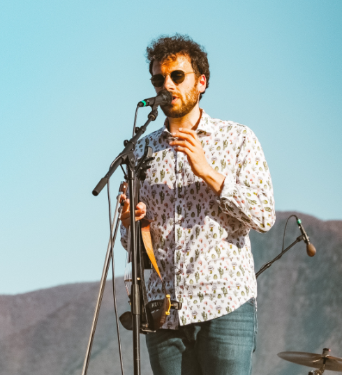

Ukrainian Lirico-Spinto Soprano

Viktoriia Balan is a Ukrainian lirico-spinto soprano based in Italy, acclaimed for her rich vocal timbre, dramatic flexibility, and commanding artistic maturity across the Italian romantic and verismo repertoires.